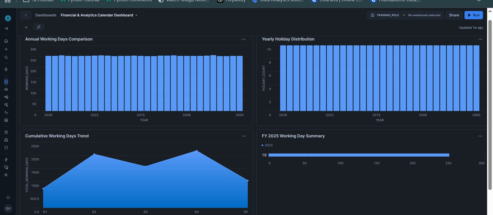
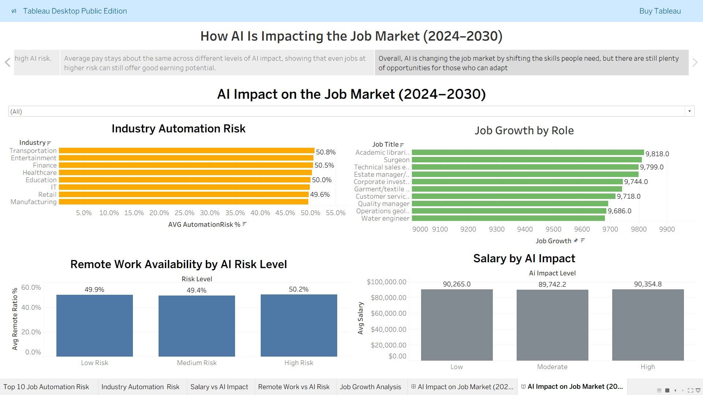
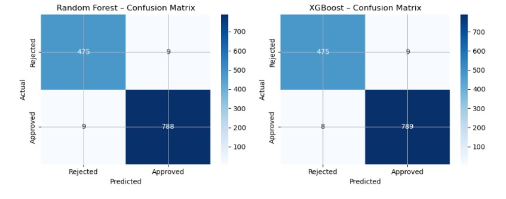
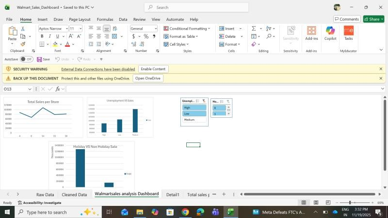
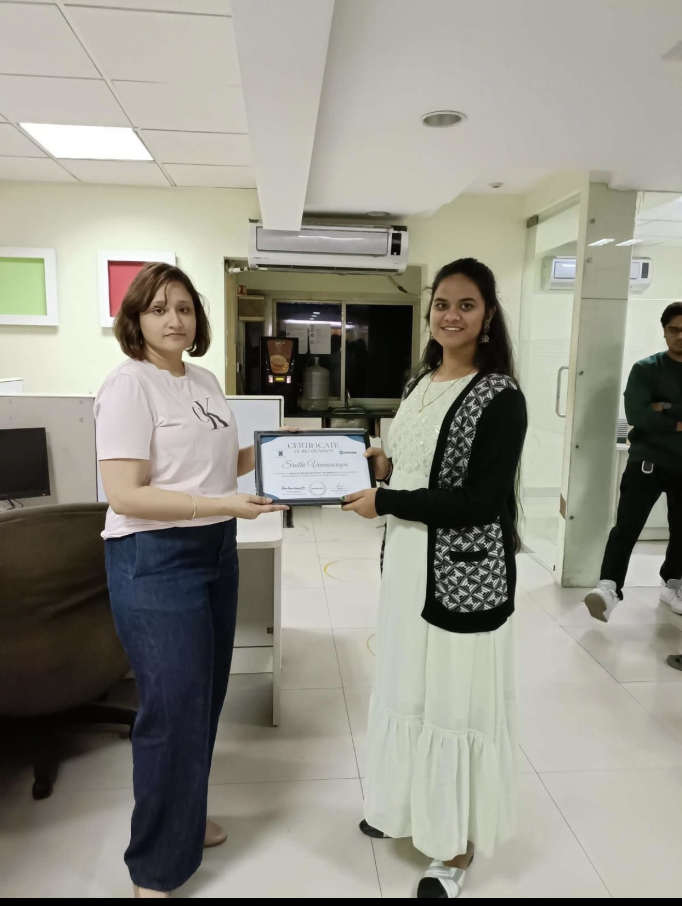
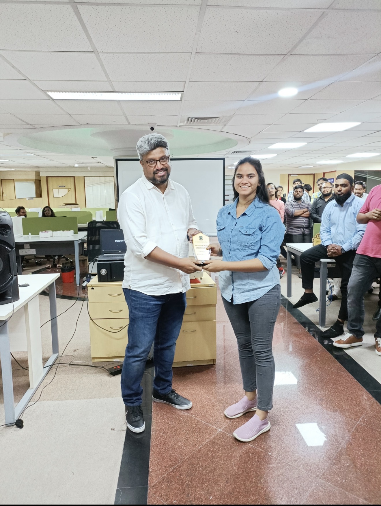

Hi,
I'm Sruthi.
Data Analyst and BI Analyst focused on transforming messy operational and public datasets into decision-ready SQL reports, KPI dashboards, prioritization tools, and stakeholder-friendly insights.
Business-minded Data Analyst
I am a Data Analyst / BI Analyst / Reporting Analyst with 3+ years of experience in reporting, data cleaning, dashboard development, KPI tracking, and stakeholder analytics, supported by an M.S. in Data Science from the University of St. Thomas. My career began in recruitment operations, where I learned how data quality, process visibility, and clear reporting directly influence business outcomes. Today, I use SQL, Python, Excel, Tableau, Power BI, Snowflake, Databricks, and Streamlit to turn complex datasets into insights that help teams make faster and better decisions.
BI & KPI Reporting
Build dashboards and reports that track performance, identify bottlenecks, and communicate trends to technical and non-technical stakeholders.
Data Cleaning & Modeling
Clean, validate, standardize, and structure datasets for accurate reporting, analytics, and business intelligence workflows.
Business Communication
Translate messy business problems into clear analytics questions, measurable KPIs, and decision-ready recommendations.
Analytics & BI Work
Selected projects focused on business intelligence, public data analytics, reporting automation, predictive modeling, and stakeholder-focused dashboard design.
Carelio
Minnesota public health & food support prioritization dashboard
Carelio — Minnesota Food Support Prioritization Tool
Python / SQL / Pandas / Streamlit / Power BI
Built an end-to-end analytics tool using public food access, health, insurance, school lunch, and income datasets for all 87 Minnesota counties. Designed a priority scoring model, county rankings, KPI cards, filters, and visual views to help nonprofit and public health stakeholders compare county-level needs quickly and support outreach planning.

Snowflake Architecture
Snowflake SQL / Data Modeling
Modeled fiscal-period and business-day tables in Snowflake SQL, incorporating holidays and quarter-end logic to improve recurring finance reporting preparation.

AI Market Analytics
Python / SQL / Tableau
Cleaned and analyzed labor market records across industries to evaluate salary trends, automation risk, remote-work adoption, and job-growth projections.

ML Loan Forecasting
Predictive Modeling
Built a machine learning model to predict loan approval outcomes and evaluate performance using classification metrics, validation, and model interpretation.

Walmart Sales BI
Tableau Visualization
Designed a Tableau BI dashboard to analyze sales trends, compare performance, and communicate retail insights through clear business visuals.
Business Impact
Experience connecting operations, reporting, data quality, stakeholder communication, and leadership into measurable business outcomes.
Data & Recruitment Analyst / Team Lead
Avance Consulting | Feb 2021 - Aug 2024- Analyzed 600+ candidate and pipeline records across Excel and ATS platforms, standardizing fields and removing duplicates to improve data quality and reduce reconciliation rework.
- Developed weekly and monthly Excel KPI dashboards tracking submissions, placement rates, recruiter productivity, and pipeline movement to help managers identify bottlenecks and follow-up priorities.
- Translated client requirements and recruiting trends into clear reports for technical and non-technical stakeholders, supporting faster decisions on candidate quality, submissions, and team performance.
- Guided reporting consistency for an 8-member recruiting team by documenting data-entry standards, reviewing weekly updates, and improving ATS data reliability.
Certifications
Certifications that support analytics, business intelligence, data-driven decision making, and Agile collaboration.
Agile Explorer
Credly Digital Badge | Agile values, Agile practices, Kanban, collaboration, and iterative delivery.
SQL Learning
LinkedIn Learning | SQL querying, relational data, and analytics foundations.
Ask Questions to Make Data-Driven Decisions
Google | Coursera | Business questions, stakeholder needs, and decision-focused analytics.
Foundations: Data, Data, Everywhere
Google | Coursera | Data analytics foundations, data lifecycle, and analytical thinking.
Testimonials
Feedback from instructors and colleagues highlighting technical growth, analytics capability, leadership, reliability, and business communication.
“Sruthi has a very good understanding of data mining and analytics. She has transitioned from recruiting into a very strong technical professional. I have seen her skills firsthand in technical development and she shows strong leadership potential.”
Nathan Crawford
Instructor | Snowflake & Databricks / ML Operations“Sruthi consistently demonstrates strong domain knowledge, strategic thinking, and the ability to deliver results under tight timelines. She leads with clarity and empathy while maintaining productivity and quality standards.”
Rahul Reddy Kalwala
Account Manager | Avance Consulting“As a technical recruiter, Sruthi was reliable in finding qualified talent quickly.”
Mike Macer
Former ColleagueAnalytics Community & Industry Learning
FASTCon 2026
MinneAnalytics | Best Buy HQ
Learning from real-world AI, data, and supply chain innovation
Attended FASTCon 2026, hosted by MinneAnalytics at Best Buy Headquarters in Minnesota, connecting with professionals across data, AI, supply chain, analytics, and business innovation.
A key highlight was learning how RGB camera-based computer vision is being applied in industrial environments for worker safety monitoring, action recognition, food yield estimation, and automated object counting. The event strengthened my interest in applying analytics and AI to improve safety, efficiency, productivity, and real-world decision making.
Education
M.S. in Data Science
University of St. Thomas, St. Paul, MN | Aug 2024 - May 2026- Relevant coursework: Data Analytics & Visualization, SQL, Data Warehousing, Data Lakes, Machine Learning, and AI.
Bachelor of Technology
JNTU, HyderabadAchievements


Get In Touch
Open to Data Analyst, BI Analyst, Reporting Analyst, and analytics-focused roles where I can combine technical analysis, business communication, and dashboard-driven decision support.